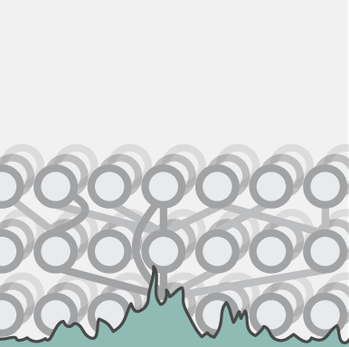
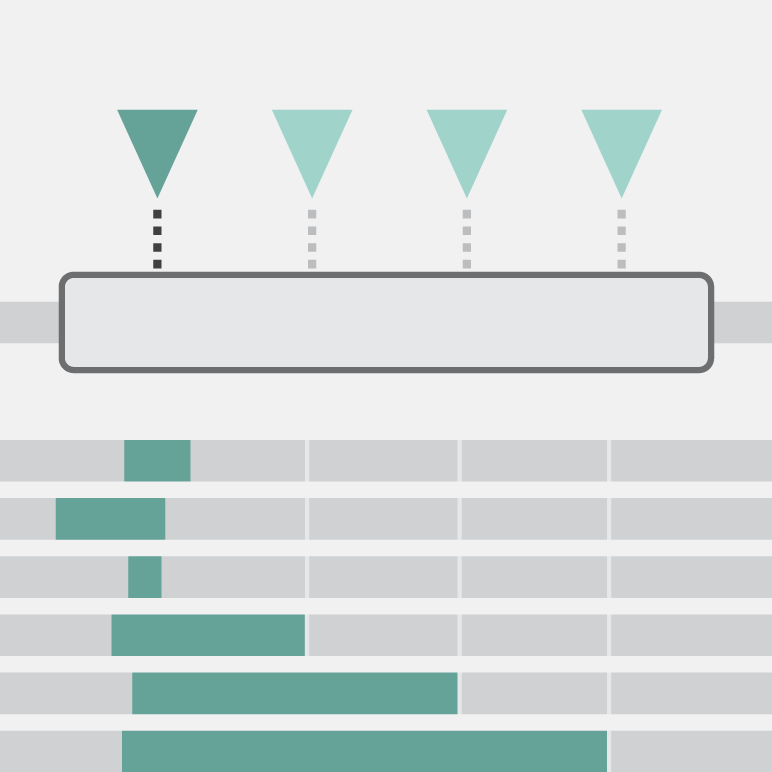
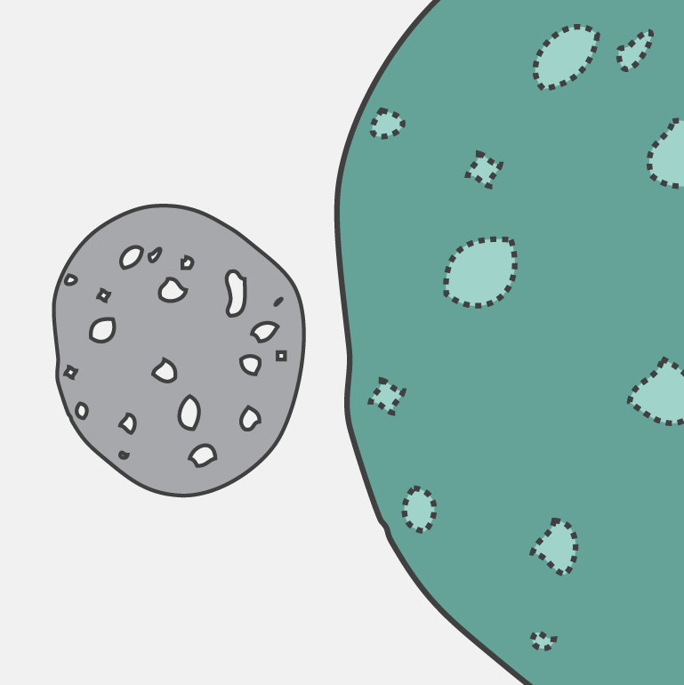
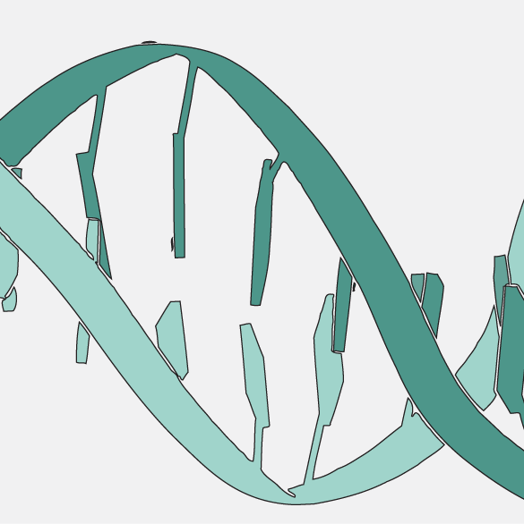

Quantitative gene regulation in stem cells
I studied how gene regulatory DNA responds to graded Oct4 levels in mouse embryonic stem cells to determine features of dose-sensitivity.
I'm an experimental-computational scientist who builds scalable perturbation and functional-genomics systems to answer complex biological questions. Previously Postdoc at Systems Epigenetics Max Planck Institute for Molecular Genetics and PhD at Systems Biology of Gene Regulatory Elements MDC-BIMSB.

I studied how gene regulatory DNA responds to graded Oct4 levels in mouse embryonic stem cells to determine features of dose-sensitivity.


I established high-content screening and found signaling pathways that regulate heterochromatin organization.
graphical summary pub 1 2
Papers-to-table extracts structured information from scientific publications with local LLMs.
Curated resources for research work, communication, lab culture. Related agent skills.
Guess-the-citations game that explores the limitations of citation counts.

{kind=link}
{kind=link}
{kind=link}